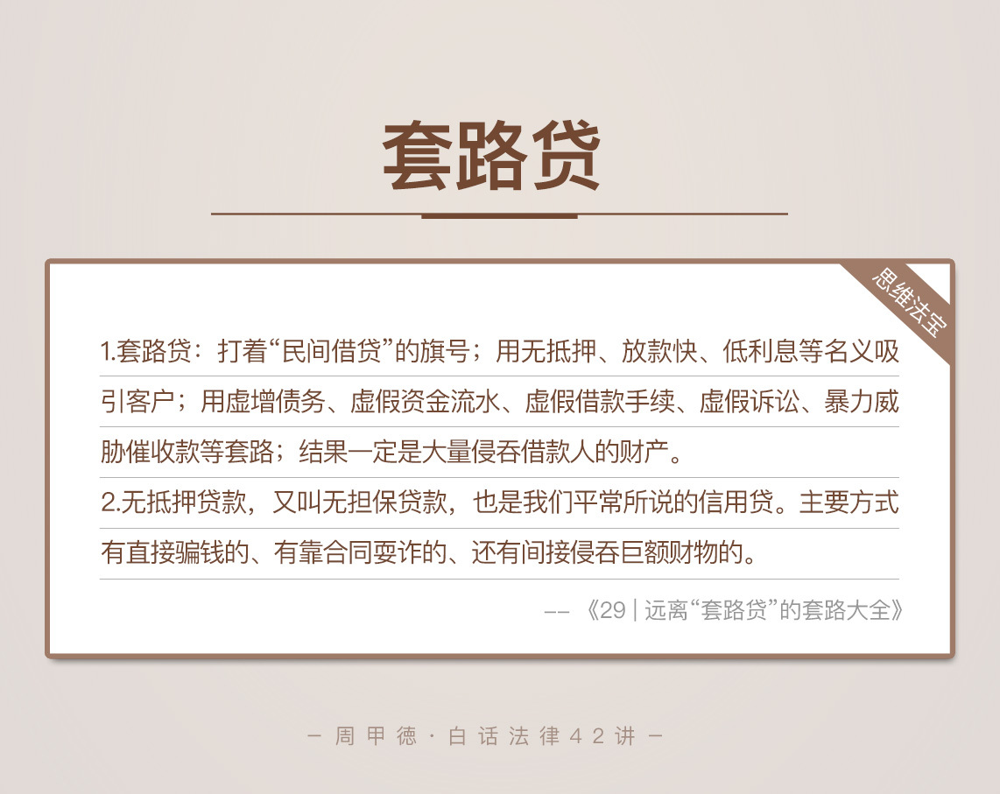

- 00 开篇词 这年头，你真应该懂点法律常识.md
- 01 “老周，我想知道” 常见法律认知盲区（一）.md
- 02 “老周，我想知道” 律师就在你身边（二）.md
- 03 “老周，我想知道” 律师就在你身边（三）.md
- 04 “老周，我想知道” 律师就在你身边（四）.md
- 05 创业未捷老板跑，社保工资哪里讨？.md
- 06 保密还是“卖身”，霸王条款怎么看？.md
- 07 编造流言蹭热度？看守所里降温度！.md
- 08 合同在手欠款难收，报警有用吗？.md
- 09 致创业：谁动了我的股权？.md
- 10 又见猝死！工“殇”究竟是不是工伤？.md
- 11 期权的“前世今生”.md
- 12 裁员面前，你能做的还有什么？.md
- 13 抄袭、盗图为什么做不得？.md
- 14 加班、工资、休假，你知道多少？.md
- 15 受贿原来这么“容易”.md
- 16 今天你用“VPN”了吗？.md
- 17 漏洞在眼前，可以悄悄破解吗？.md
- 18 “爬虫”真的合法吗？.md
- 19 非法集资到底是个啥？.md
- 20 黄色网站？不仅仅是“黄色”罪名.md
- 21 谁修改了我的积分资产？.md
- 22 外挂真能大吉大利吗？.md
- 23 如何看待“从删库到跑路”？.md
- 24 “伪基站”是你的避风港吗？.md
- 25 “网络诈骗”真的离你很远吗？.md
- 26 智斗中介：“北上广”租房图鉴.md
- 27 买买买！买房的“避坑”指南.md
- 28 闪婚又闪离，彩礼怎么理？.md
- 29 离婚还想和平？你要这么做.md
- 30 遗产继承的爱恨情仇.md
- 31 骗术升级？假结婚、假离婚的那些事儿.md
- 32 孩子学校受伤，谁之过？.md
- 33 如何让欠债还钱真正“天经地义”？.md
- 34 从透支到盗刷：人人须知的银行卡纠纷.md
- 35 远离“套路贷”的套路大全.md
- 36 危险！酒驾为什么被罚那么重？.md
- 37 老人倒地，“扶”“不服”？.md
- 38 “能动手就别吵吵”，代价你真的知道吗？.md
- 39 发生交通事故，如何处理？.md
- 40 交通事故综合法宝.md
- 41 婚姻家庭综合法宝.md
- 42 买卖房屋综合法宝.md
- 一键直达 法律专栏“食用”指南.md
- 加餐 “新冠肺炎”影响下，17个常见法律问题解答.md
- 结束语 法律，不会终止的篇章.md
35 远离“套路贷”的套路大全
无抵押贷款、校园贷、车贷、房贷甚至是裸贷，这些词估计你并不陌生，小广告上到处都能看到。极具诱惑的高额度和大优惠，让不少人心动不已，尤其那些有大事、急事要用钱的人，不少大学生也牵连其中。
这些本来都属于民间借贷，和刑事犯罪并不沾边。只不过，现实生活中，很多这类贷款都变成了套路贷，成为犯罪分子敛财的重要工具。一旦沾染套路贷，轻则损失一大笔钱财，重则掉入无底洞，深陷其中出不来，毕竟，因为套路贷自杀的新闻也并不少啊。
今天，我们就来聊聊借贷的那些坑。先来看一个我前年办过的案子，案件可以说是非常跌宕起伏了，不过，为了保护当事人的隐私，也为了让你更容易理解，我把案件简化改编了一下。
张三是一个创业公司的CEO。2010年，他在海淀区买了一套学区房，当时花了200多万，只不过一直闲置，很少有人住。
去年，因为公司周转不开急用钱，张三在网上找了一家小额贷款公司，准备把房子抵押出去。贷款手续倒是挺简单，按要求前几份文件、办理公证手续，并把房本抵押给贷款公司，当天就收到了贷款公司以个人名义转账的90万，借期半年。
当然，张三现在的房子，市值已经有600多万了，所以一切看着都挺合理，张三也在贷款当天，就现金支付了利息和保障金，等着度过难关后，再把房子收回来。
然而，没俩月，张三发现自己的房子被人给低价卖了，还是个陌生人卖的？张三完全不知所措，找到了我来办这个案子。我一看，这不典型的套路贷吗？调查后才发现，借款时，张三无意中签了两份委托书，内容正是委托这个陌生人卖房，委托书还经过了公证。
张三很气愤，同时也糊涂了。小额贷款，怎么还有这么多的门道？套路贷，到底是又怎么回事呢？
法律知识
套路贷
在这里，我们先要搞清楚套路贷的意思。其实，套路贷这个词，并不是法律上的概念，只不过太常见了，我们就起了这么个名字来称呼。在我看来，套路贷的重点在于恶劣的套路，说白了就是这么几个特点：
打着“民间借贷”的旗号；
用无抵押、放款快、低利息等名义吸引客户；
用虚增债务、虚假资金流水、虚假借款手续、虚假诉讼、暴力威胁催收款等套路；
结果一定是，大量侵吞借款人的财产。
套路贷表面上看起来天衣无缝，但实际上，所有法律手续都不符合实际情况。
最简单的一种，类似于，合同约定1万元，转账记录显示1万元，但是借款人实际到手只有2000元，其他钱被各种名义扣除，比如利息、保证金、担保费、手续费等。同时，他们转账走银行卡，扣钱却只走现金，借款人有口难辨。
套路贷的违法隐蔽性很强，打击难度也比较大。表面上看只是民事纠纷，也就造成了刑事立案难。如果真的被媒体揭露，上了新闻，一般都是那种借款人出了大事、无可挽回的局面，这才能让他们的冰山露出一角。
我们必须明确，套路贷本身是犯罪行为，不是简单的民事纠纷。如果真的遭遇套路贷，仅靠还钱甚至都不能脱离这个无底洞。
无抵押贷款
无抵押贷款，又叫无担保贷款，也是我们平常所说的信用贷。真正的无抵押贷款有吗？
确实有，但是这种通常来自银行或者支付宝、微信，一般基于大数据分析你的工作、收入、住房、消费等情况，结合你的信用情况来发放贷款。额度比较科学，对发款方来说，风险也比较低。
我们今天讨论的“无抵押贷款”，主要是指网上常见的那种广告语，承诺得天花乱坠，就是为了哄你上钩。当然，这也是套路贷中的一种。
不过，听着越好听的，往往风险越大。所谓的“无抵押”，其实水更深。
有直接骗钱的。比如，嘴上说可以提供无抵押贷款，但你得先交手续费。等你交完手续费，接着又是公证费，等你交完公证费，接着又是其他费。所有费用都听着合情合法，只不过，当你发现不对劲儿时，对方已经消失了。
有靠合同耍诈的。比如，在合同里动手脚，挖坑等你跳。很多人明明只借了5000元，最后5万元也还不完，钱都进了他们的口袋。
还有间接侵吞巨额财物的。比如，给你放贷，但你得把房子、车子交给他们保管，还要办理公证手续，结果却用各种花招，把你的东西给卖了。今天的主人公张三，遇到的可不就是这种吗！
情景分析
其实，在张三找到我后，我告诉过他，第一件事一定是向法律起诉，保全自己的房子，防止房子再被转卖，增加讨回的难度。可是，张三犹豫了三天后，我担心的事情果然发生了。
房子被第一个陌生人，假借张三的名义卖给第二人后，第二人又转卖给了第三人，第三人为了贷款买新房，直接把房子抵押给了银行。
在当时，想报警来解决这事儿，几乎是不可能的。双方签的合同都是合法的，还做了公证，手续也都是齐全的。张三能找到的证据，只有两个：
一个是贷款公司的转账，但是只有个人账户的证据，证明不了跟公司的借贷关系。
另一个，就是那个莫名其妙签下的委托书，但是这能找到第一人的关系，后面的一大串人物关系，压根儿证明不了。
你看，现实的情况就是这么复杂而艰难。这种情况下，应该怎么办呢？我给了张三这么几个思路。
第一种，要回房子。
民事途径：房子目前在第三人的名下，还被抵押给了银行。想要回房子，那就必须证明涉及到的这些人相互串通，目的就是恶意侵害张三的利益。这样，法院才能撤销这些房屋买卖合同，并要求他们还清银行贷款，办理解押手续，最后把房子还给张三。
不过显然，张三连第一人都不认识，更别提后面那一大串了。这条路基本走不通。
刑事途径：向公安机关报案，告贷款公司和这些人合伙诈骗。不过，还是那句话，张三提供不了任何证据，这些骗子又经过专业训练，根本审不出什么有用的证据。
第二种，放弃房子，要求赔偿。
既然前面要房子的路都被堵死了，那也只能放弃了。张三还可以通过民事诉讼，要求第一人承担低价卖房的损失，索要赔偿。
防不胜防并且各种翻转，这就是常见的，所谓“小额贷款公司”侵占个人财产的套路。他们的每一步，都经过了精确的计算，踩着法律的边缘，就是为了让猎物无法挣脱。每次处理这样的案子，我都是一阵心惊。难啊！
其实除了这种涉及钱财较大的“高深”套路贷，我们普通人也经常遇到各种其他类型，最典型的就是“暴力”套路贷。
还是熟悉的配方，名义上叫做投资公司、咨询公司、金融借贷平台、典当行，或是无抵押贷、校园贷、车贷、房贷、裸贷等，不过他们用的是暴力手段来催债，比如跟踪骚扰、言语威胁、变相拘禁、殴打伤害。
这种类型的可怕之处，不在于套路多么复杂，而是在于死缠烂打，像吸血鬼一样，不榨干绝不松口。只要你借了钱，基本就还不清了，他们会逼你陷入利滚利的恶性循环，让你家徒四壁才可能收手。
他们通常还会非法获取你所有的通话记录，以及亲朋好友的联系方式。一旦你无力还款，就会不断骚扰你的亲人朋友，用恐吓等手段逼还高利贷。
现在，对于“暴力”套路贷的打击力度很大，国家司法机关甚至把这种归为黑恶势力（也就是我们俗称的黑社会）一种类型，基本上是露头就打，严打严抓。我想，这种类型在未来应该会有所收敛，不过，难免有漏网之鱼。
另外，裸贷、校园贷的借款人，也是套路贷一类公司的重点关注对象。在校生一旦被套路贷缠身，可能会遭到裸照威胁，亲戚、朋友、父母也都会被催债，而且这通常也能成功。
因为大学生更看重脸面，家人也很重视，同时，放款额度本身也不大，基本上没人愿意暴露，一般都是悄悄还了高利贷，遮掩过去就完事儿了。这也让校园贷在套路贷中一度火爆，直到爆出了多起自杀事件，才平息了下去。
思维法宝
金融监管部门、公安部门都在加大打击力度，但是，客观来说，这种情况永远都不会绝迹。只要有人贪婪，想占小便宜，或者病急乱投医，就难以避免套路贷改头换面，卷土重来。

我也只能尽量地给出一些可行的建议，帮助你甄别，并且远离。
不相信广告，要相信疗效。越是无抵押、无担保，越要警惕。真有那么美的事，对方难道是傻子吗？恰恰相反，他们是精明而黑心的骗子。
签合同要谨慎。这话我强调过好几次，不是啰嗦，而是真的太重要了。法律看的是证据，合同就是最硬的那一条。弄清楚签的是啥，具体条款是怎样的，对时间、金钱、人名这些概念要非常敏感。白纸黑字，可能用来伤害你，也可以保护你，就看谁更懂法、更细心了。
不幸遇到“套路贷”，请及时报警。同时，一定要把实情告诉身边的人，这既是为了获得帮助，克服心理上的恐惧，也是为了防止进一步的被骗和损失。
今天的内容主要是这些。套路贷，你还听说过什么奇葩的套路或者经历吗？欢迎留言和我分享，也欢迎你把这篇文章分享给亲人朋友。不贪、不慌、不马虎，其实是应对套路贷最好的套路。
© 2019 - 2023 Liangliang Lee. Powered by gin and hexo-theme-book.